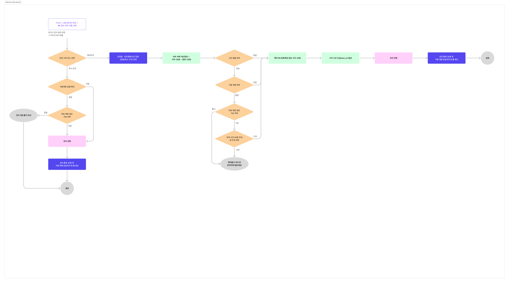

← 인덱스로
Samsung SDS Multicampus · AI Studio × Zoom
강의 시작 프로세스
v6.1
2026-03-18 | 즉시 시작 / 예약 분기 · 버퍼 정책 분리 반영

⚠️ 사이드이펙트 고려사항
즉시 시작 시 앞 버퍼 없음 → 직전에 종료된 예약 강의의 뒤 버퍼(30분)와 겹칠 수 있음.
예: 예약 강의 14:00 종료 → 버퍼 14:30까지 점유 중인데, 즉시 시작 시도 시 14:00~14:30 구간 충돌 가능.
→ 즉시 시작도
현재 시각 기준 buffer_end 이후 계정만 배정
하는 로직 필요. 개발팀 확인 요망.